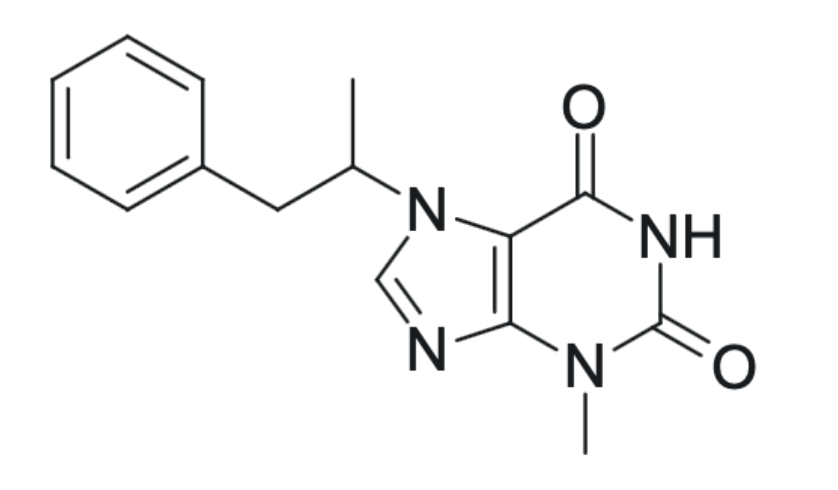

a novel N1‑substituted xanthine derivative featuring a bulky N1 substituent, it is disclosed as a CNS‑active agent
3,7-dimethyl-1-(1-methyl-2-phenylethyl)-3,7-dihydro-2H-purine-2,6(1H)-dione
C16H18N4O2
298.34 g/mol
1.24
0
6
3
CC(Cc1ccccc1)N(C(c1c(N2C)nc[n]1C)=O)C2=O
All data for Xanthamine were derived from computational studies. Molecular properties were predicted using cheminformatics and docking tools including RDKit, SwissADME, and AutoDock Vina. Energy minimizations and molecular docking were performed to assess CNS permeability, receptor binding, and lipophilicity. These results are theoretical and not based on any in vitro or in vivo testing.
Xanthamine is predicted to function as a CNS stimulant through adenosine receptor antagonism and possible dopaminergic or noradrenergic modulation. Computational models indicate potential utility in cognitive enhancement and attention-related disorders such as ADHD or narcolepsy. These predictions are derived solely from in silico simulations and molecular docking analyses.
0
CC(Cc1ccccc1)N(C(c1c(N2C)nc[n]1C)=O)C2=O
1 (R/S possible)
−8.2 kcal/mol (predicted)
~60 Ų
High
Future efforts include in silico ADMET modeling, virtual screening of analogs, and exploration of receptor subtype selectivity. No wet-lab synthesis or biological assays have yet been performed. Experimental validation will follow pending intellectual property protection and computational prioritization of analog structures.
All findings presented on this page are based on computational predictions. Xanthamine has not been synthesized or tested in humans or animals. The information is provided for theoretical and research communication purposes only and should not be interpreted as experimental or clinical data.